[Network] TCP와 UDP 알아보기 (w. 흐름 제어, 혼잡 제어, CongWin, HTTP/3)
서론
CS 스터디에서 10월 28일 발표한 TCP & UDP에 대해 정리한 문서를 블로그에 공유하고자 한다.
TCP와 UDP에 대하여
TCP와UDP는 네트워크 계층 중전송 계층(transport-layer)에서 사용되는 프로토콜전송 계층- 프로세스 간
논리적 통신(logical communication)이 이뤄지는 계층 네트워크 계층의 서비스들에 의존하고, 이들을 강화시키는 계층- 보내려는 메시지를
전송 계층의 규격에 맞게 분할 후, 해야할 일을 헤더로 부착해 보내는 과정을 거침
- 프로세스 간
TCP
요약
신뢰성(reliable)순서에 맞게 전송하고자 함(in-order)혼잡 제어,흐름 제어,연결 설정과 같은 기능 제공
주요 특징
1대1 통신(unicast)신뢰할 수 있고, 순차적인 바이트스트림메시지 바운더리없음 (전송되는 두메시지 사이의 구분이 없음) 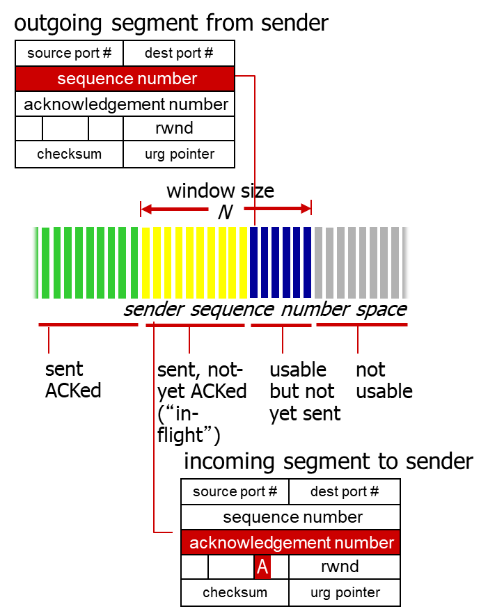송신 번호,ACK 번호를 사용
파이프라인사용- TCP
혼잡, 흐름 제어를 위한window size를 설정
- TCP
전이중 데이터- 동일한 연결 상에서 양방향 통신
- 최대 세그먼트 크기(
MSS)
연결지향적 통신- 데이터 교환 전,
핸드셰이킹(제어 메시지 교환)으로 송신자-수신자상태 초기화
- 데이터 교환 전,
흐름 제어- 송신자가 수신자를
압도(overwhelm)하지 않음
- 송신자가 수신자를
RTT(Round Trip Time, 왕복 시간)
TCP의 효율적인 통신을 위해, 지정된 시간 내에 ACK 신호나 세그먼트를 수신하지 못한 경우, 연결 시간 초과(timeout)로 처리하고 연결을 종료해야 함.
- 이때,
TCP timeout 시간은 RTT보다 길어야 함- 하지만, RTT는 편차가 있을 수 있음
- 너무 짧게 잡는다면, 재전송이 자주 발생함
- 너무 길게 잡는다면,
세그먼트 손실에 대해 느리게 반응하게 됨
- 이때,
RTT의 편차등을 어떻게 측정해야 할까?SampleRTT- 세그먼트 전송 후,
ACK 수신까지 측정된 시간 (재전송 무시) - 다만
SampleRTT역시 다양할 수 있으므로, 이들의 여러 최근 측정값을 평균내어 사용
- 세그먼트 전송 후,
- RTT의 기준?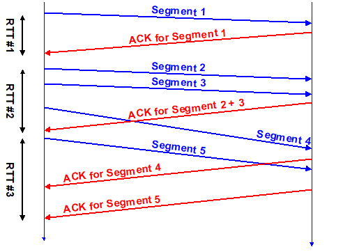
- 만약 ACK 수신 이전,
여러 번의 세그먼트 전송이 발생한 경우가장 처음 보낸 세그먼트를 기준으로 함 - 만약
동일한 세그먼트가 재전송된 경우,RTT 측정에 포함하지 않음- 처음 보낸 세그먼트에 대한 ACK 인지, 재전송된 세그먼트에 대한 ACK인지
구분할 수 없기 때문
- 처음 보낸 세그먼트에 대한 ACK 인지, 재전송된 세그먼트에 대한 ACK인지
- 만약 ACK 수신 이전,
신뢰할 수 있는 데이터 전송
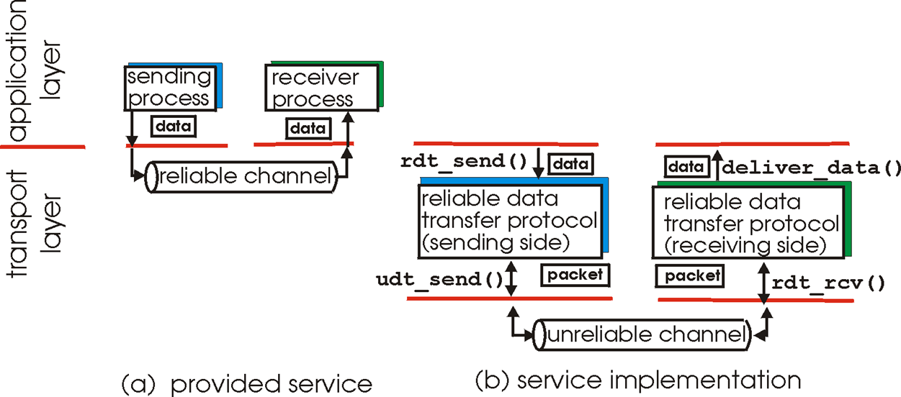
- 응용, 전송, 링크 계층에서
신뢰성은 매우 중요한 개념으로, 각 계층마다 신뢰성 유지를 위해 데이터를 체크신뢰성:비트 에러,패킷 손실없이 한 번만 전송하는 것
TCP에서의 RDT
- TCP는
RDT(Reliable Data Transfer, 신뢰성 있는 데이터 전송) 서비스를 IP의 신뢰성 없는 서비스 위에 구축함파이프라인화된 세그먼트(연속으로 전송할 수 있음)누적 ACK(GoBackN과 유사)단일 재전송 타이머(데이터 보낸 시간 != timeout 시간 일 수 있음)
재전송은 다음 두 경우 발생timeout 이벤트- timeout이 발생한 경우, 이를 일으킨 세그먼트를 재전송
- 타이머 재시작
중복된 ACK- 이전에 ACK되지 않은 세그먼트를 ACK하는 경우
- 어떤 패킷이 ACK되었다고 알려져있는지 갱신
- ACK되지 않은 세그먼트 아직 있으면 타이머 시작
흐름 제어
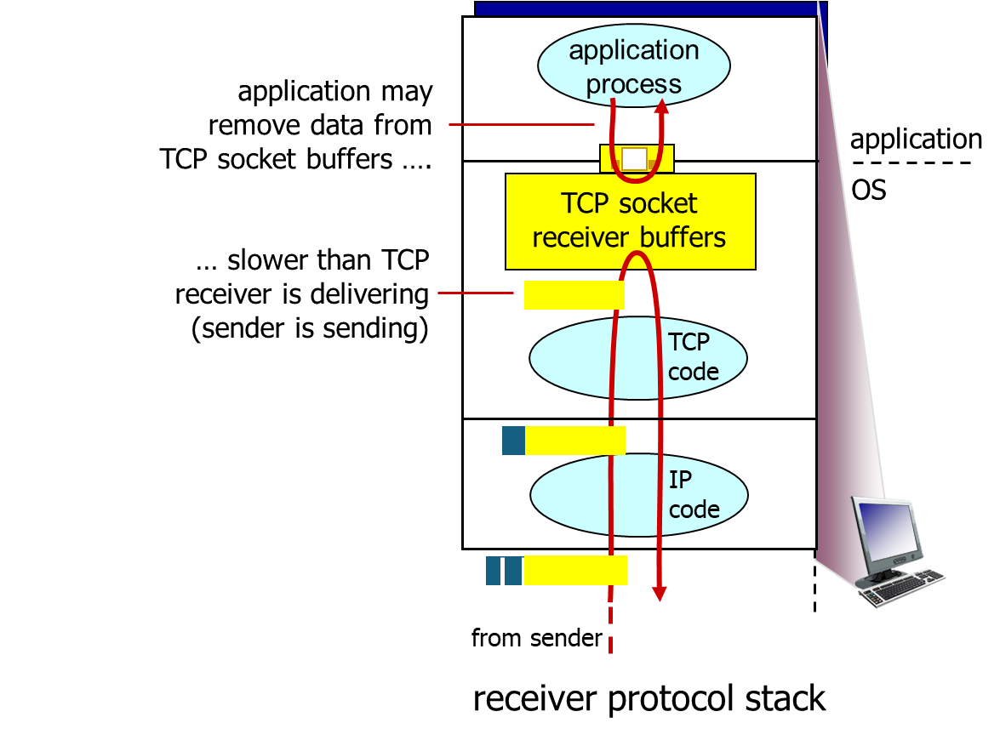
흐름 제어: 빠른 발신자가 너무 많이, 너무 빨리 전송해 느린 수신자 버퍼가 넘치지 않도록(압도하지 않도록) 함- 수신자는 TCP 헤더에
윈도우 크기(rwnd)를 포함시켜, 사용 가능한 버퍼 공간을 명시함 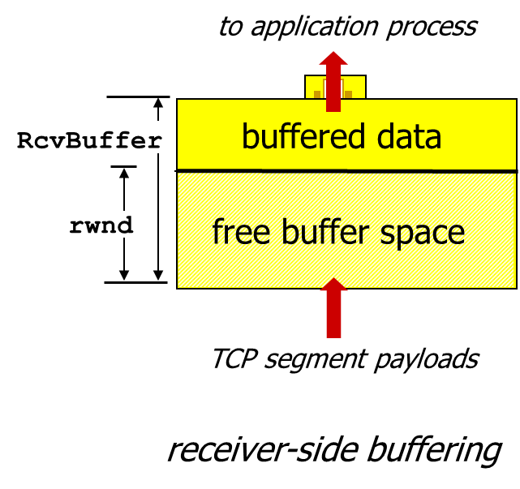- 소켓 옵션을 통해 설정된
수신자 버퍼(RcvBuffer)크기 값으로, 보통 4096 byte가 디폴트 - 대부분의 운영체제에서 이 크기를
자동 조정함
- 소켓 옵션을 통해 설정된
- 발신자는
수신자의 윈도우 크기만큼만ACK되지 않은(in-flight) 데이터를 보낼 수 있음- 이는 수신자 버퍼가 넘치지 않도록 보장
Stop-and-wait
- 가장 간단한 형태의 흐름 제어 기법
- 발신자가 하나의 패킷을 보낸 뒤, 수신자의 응답이 올 때까지 기다림
ACK를 수신하거나, 타임아웃이 발생하면 다시 패킷 전송
Go-back-N
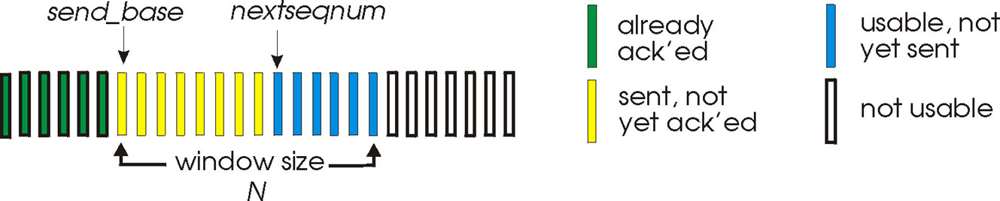
send_base: 보낸 패킷 nextseqnum: 보낼 예정인 패킷
- N개의
ACK되지 않은 패킷을 파이프라인을 통해 전송 - 수신자는
누적 ACK(cumulative ACK)만 전송 - 발신자는 가장 오래된
ACK되지 않은 패킷에 대한 타이머 갖고 있음- 타임아웃 발생시,
모든 ACK되지 않은 패킷들을 재전송- 즉,
가장 마지막으로 ACK 받은시퀀스 번호로 돌아가 재전송
- 즉,
- 타임아웃 발생시,
Selective Repeat
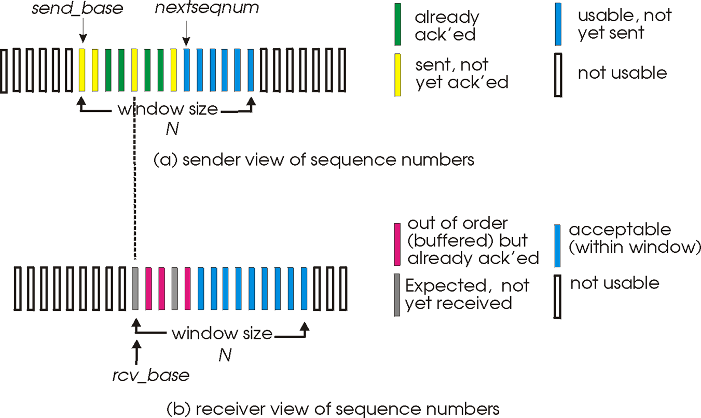
- N개의
ACK되지 않은 패킷을 파이프라인을 통해 전송 - 수신자는
각각의 패킷에 대한 ACK를 전송 - 발신자는 각 패킷에 대한 타이머를 갖고있음
- 타임아웃 발생시,
해당 패킷만재전송
- 타임아웃 발생시,
- 수신자는
순서를 지켜(in-order)상위 계층에 패킷들을 전달하기 위해,버퍼사용- 문제 생긴 패킷
다음의 패킷들을 버퍼에 저장, 또는순서에 맞지않는 패킷들저장 - 이후, 문제 생긴 패킷을 재전송받고,
일정 갯수의 패킷이 모이면상위 계층으로 전달
- 문제 생긴 패킷
- 참고
- Selective Repeat Protocol : Selective Repeat 흐름을 테스트해볼 수 있는 사이트
혼잡 제어
- 발신자가 혼잡함을 인식하는 기준
손실 이벤트(loss event):타임아웃또는3번의중복된 ACK
- TCP 발신자는
손실 이벤트발생시, 혼잡에 대응하기 위해혼잡 윈도우(Congestion Window, CongWin)의 크기를 조절해 대응 혼잡 제어를 위해AIMD,slow start,conservative after timeout events3가지 메커니즘 존재
AIMD
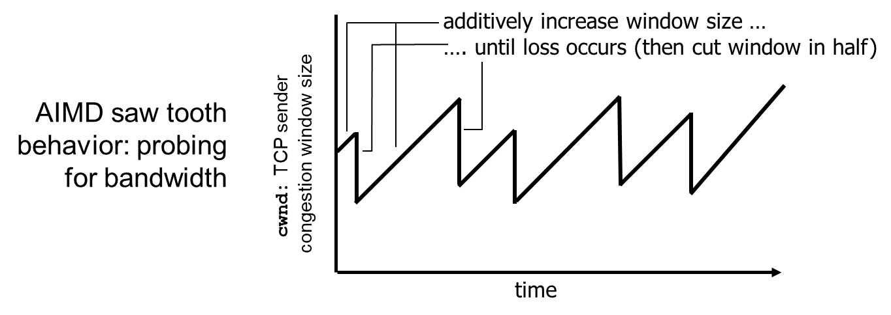
Additive Increase Multiplicative Decrease의 약어혼잡 윈도우를 혼잡이 감지되지 않을때는선형적으로 증가시키다, 혼잡이 감지되면기하급수적으로 감소시키는 방식- 손실이 감지될 때까지, 매
RTT마다cwnd를 1 MSS씩 증가 - 손실이 발생하면,
cwnd를 절반으로 줄임
- 손실이 감지될 때까지, 매
- 즉,
cwnd는 인식된 네트워크 혼잡 정도를 나타내는 함수라고 할 수 있음 - TCP 전송 속도 $rate \approx {cwnd \over RTT} bytes/sec$
Slow Start
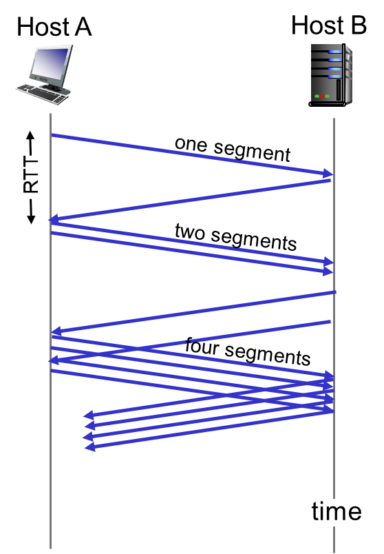
- 연결 시작 이후,
손실 이벤트발생 전까지 속도를 기하급수적으로 증가시키는 방식- 초기
cwnd= 1 MSS - 매 RTT마다
cwnd는 2배씩 증가- 정확히는 모든
ACK 수신마다cwnd를 2배로 증가시킴
- 정확히는 모든
- 시작 값이 1이라
Slow Start라는 이름이 붙었으며, 증가 속도는 빠름
- 초기
Conservative after timeout events(타임아웃 발생 후 보수적으로)
타임아웃으로 손실을 인식cwnd는 1로 세팅됨- 이후
cwnd가 기하급수적으로임계값(threshold)까지 증가한 뒤,선형적으로 증가
3개의 중복 ACK로 손실을 인식 :TCP RENO중복 ACK는 네트워크가 아직세그먼트들을 전달할 수 있음을 나타냄cwnd를절반으로 줄인 뒤,선형적으로 증가
타임아웃또는3개의 중복 ACK발생시 손실 인식 :TCP Tahoe- 인식시
cwnd를 1로 설정
- 인식시
요약
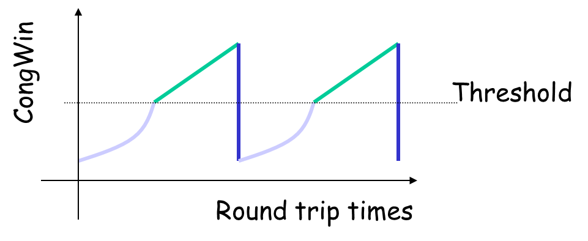
cwnd가 임계값보다 낮을때, 발신자는Slow Start 단계로, 윈도우가 기하급수적으로 증가cwnd가 임계값 이상이면, 발신자는혼잡 회피 단계로, 윈도우는 선형적으로 증가3개의 중복 ACK발생시, 임계값은cwnd/2로 설정되고,cwnd는 임계값으로 설정됨타임아웃발생시, 임계값은cwnd/2로 설정되고,cwnd는1 MSS로 설정됨
TCP 세그먼트 구조
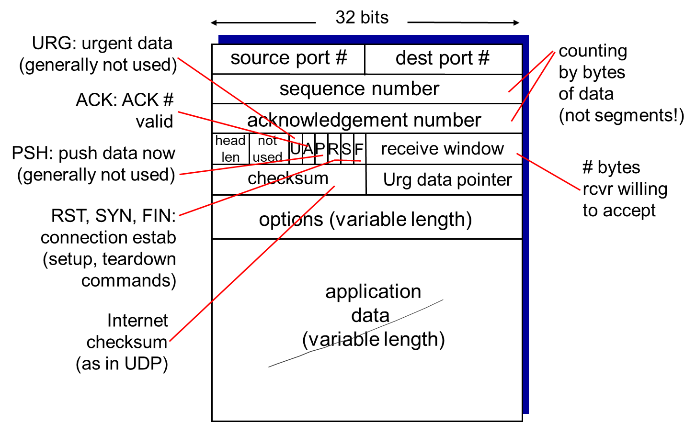
TCP 세그먼트는 다음으로 이뤄져있음송신 포트수신 포트순서 번호(Sequence Number, 현재 세그먼트의 가장 앞 바이트 번호)ACK 번호(마지막으로 수신한 데이터 바이트 다음의 번호)헤더 길이(4 bits)예약된 공간(6 bits)TCP 제어 플래그참고 - TCP 제어 플래그URG:Urgent Pointer필드에 값이 채워져있음을 알림ACK:ACK 번호필드에 값이 세팅되어있음을 알림SYN 세그먼트전송 이후 모든 세그먼트에 항상 이 비트가 1로 설정됨
PSH:Push the Data,버퍼링된 데이터를 가능한빨리상위 계층응용프로그램에 전달할 것- 수신 측은 버퍼가 차기를 기다리지 않고 버퍼링된 데이터들 응용프로그램에전달
PST:연결확립(ESTABLISHED)된 회선에강제 리셋 요청LISTEN,SYN_RCVD상태라면LISTEN상태로, 그외의 경우 연결 끊고CLOSED상태로
SYN: 연결설정을 위해순서 번호를 동기화SYN=1, ACK=0-> SYN 세그먼트(연결 요청)SYN=1, ACK=1-> SYN+ACK 세그먼트(연결 허락)ACK=1-> ACK 세그먼트(연결 설정)
FIN: 연결 종료FIN=1-> FIN 세그먼트 (종결 요청)FIN=1, ACK=1-> FIN+ACK 세그먼트 (종결 응답)
윈도우(수신자가 수락할 의향이 있는 바이트 수)체크섬(헤더+텍스트를 16비트 word들로 분할해, 이를 16비트 1의 보수합으로 누계한 다음, 최종 결과 값의 1의 보수를 구한 것)긴급 포인터(Urgent Pointer)(긴급 포인터의 현재 값을순서 번호의오프셋으로 전달하는 값. 긴급 포인터는 긴급 데이터다음 바이트의 순서 번호를 가리킴)옵션(MSS 옵션 협상, 윈도우 크기 확장, 선택확인응답(SACK) 등의 옵션 데이터를 포함할 수 있음)
UDP
요약
- 신뢰할 수 없음(
unreliable) - 순서 지키지 않음(
unordered) - 어떤것도 보장하지 않는(
best-effort) IP의 기본적인(bare bones) 확장- 즉, 어떠한 기능도 지원하지 않음
지연 보장,대역폭 보장과 같은 서비스지원되지 않음모든 데이터들이 동급이라는 전제가 있어, ‘어떤 파일을 빨리 보내야 한다’ 이런 개념이 존재하지 않음
주요 특징
“best effort"한 서비스 제공
따라서 UDP Segment는
손실 가능(송신자는 전송 이후 신경쓰지 않음)비순차적으로 전달됨
connectionless
- UDP 송신자-수신자 간
핸드셰이킹없음 - 각
UDP Segment는 다른Segmeent들과는 독립적으로 처리됨
신뢰성 없음
- 따라서 UDP 상에서 신뢰성 있는 전송이 필요하다면,
응용 계층에서 이를구현해야 함
장점
연결 조율 과정이 없음- 따라서 이로인한
딜레이 X
- 따라서 이로인한
단순함- 송-수신자 간 연결 상태가 존재하지 않음
작은 헤더 사이즈혼잡 제어 없음- 원하는 만큼 빠르게 전송할 수 있음
UDP 세그먼트 구조
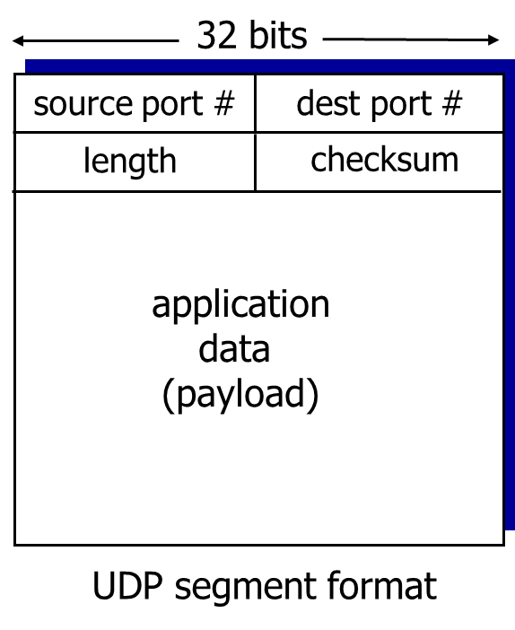
UDP 헤더는출발 포트,도착 포트,길이(헤더와 세그먼트를 포함한),체크섬으로 이뤄짐
UDP 체크섬
- 전송된 세그먼트에서
에러(ex.반전된 비트(flipped bits))를 감지하기 위해 사용되는 데이터 블록 송신자- 헤더 필드를 포함한
세그먼트 내용을16 bit 정수 시퀀스로 처리 체크섬:세그먼트 내용의1의 보수(모든 비트를 반전시킨 값)- 송신자는 체크섬 값을
UDP 체크섬 필드로 전달
- 헤더 필드를 포함한
수신자- 수신한 세그먼트의
체크섬을 계산 - 만약
계산한 값이체크섬 필드의 값과- 같다면, 에러가 검출되지 않은 것
- 다르면, 에러가 검출된 것
- 수신한 세그먼트의
사용처
UDP는 위와 같은 특징 때문에 주로 다음의 용도로 사용됨
멀티미디어 스트리밍 애플리케이션- 손실을 허용하고, 속도에 민감함
DNSSNMP
Checksum이란?
체크섬?- 전송된 세그먼트에서
에러(ex.반전된 비트(flipped bits))를감지하기 위해 사용되는 데이터 블록- 헤더 필드를 포함한
세그먼트 내용을16 bit 정수 시퀀스로 분해한 뒤, 1의 보수로 합을 누적하여 구함
- 헤더 필드를 포함한
- 전송된 세그먼트에서
TCP와 UDP 중 어느 프로토콜이 Checksum을 수행하는가?
TCP,UDP모두 Checksum을 수행할 수 있다- 다만,
UDP의 경우 IPv4에서는 선택적이고IPv6에서는필수
- 다만,
Checksum을 통해 오류를 정정할 수 있는가?
- checksum을 이용한
오류 정정은 불가능- 단순히
각 16비트 word들의 1의 보수 합이기 때문에 원래 값이 무엇이었는지 유추하기 힘듦 - 따라서
자동반복요청(ARQ)기법을 사용하거나,Hamming Code,Reed–Solomon code등오류 정정 코드를 사용하는전진오류수정(FEC)기법을 사용해 오류를 정정해야 함- 이러한 기법들은
데이터링크 계층에서 수행됨
- 이러한 기법들은
- 단순히
TCP가 신뢰성을 보장하는 방법
TCP에서는 신뢰성을 보장하기 위해 다음과 같은 서비스 제공파이프라인화된 세그먼트(연속으로 전송할 수 있음)누적 ACK(Go-Back-N과 유사)단일 재전송 타이머(데이터 보낸 시간 != timeout 시간 일 수 있어 타이머 사용)
- 위 서비스를 통해
비트 에러,패킷 손실이 일어난 데이터를 감지하고 재전송을 요청함. - 이때,
재전송은 다음 두 경우 발생timeout 이벤트- timeout이 발생한 경우, 이를 일으킨 세그먼트를 재전송
- 타이머 재시작
중복된 ACK- 이전에 ACK되지 않은 세그먼트를 ACK하는 경우
- 무엇이 ACK되었다고 알려져있는지 갱신
- ACK되지 않은 세그먼트 아직 있으면 타이머 시작
TCP의 혼잡 제어 처리 방법
- TCP에서는
혼잡 제어를 위해AIMD,slow start,conservative after timeout events3가지 메커니즘 존재- 발신자가 혼잡함을 인식하는 기준
손실 이벤트(loss event):타임아웃또는3번의중복된 ACK
- TCP 발신자는
손실 이벤트발생시, 혼잡에 대응하기 위해혼잡 윈도우(Congestion Window, CongWin)의 크기를 조절해 대응
- 발신자가 혼잡함을 인식하는 기준
AIMD
Additive Increase Multiplicative Decrease의 약어혼잡 윈도우를 혼잡이 감지되지 않을때는선형적으로 증가시키다, 혼잡이 감지되면기하급수적으로 감소시키는 방식- 손실이 감지될 때까지, 매
RTT마다cwnd를 1 MSS씩 증가 - 손실이 발생하면,
cwnd를 절반으로 줄임
- 손실이 감지될 때까지, 매
- 즉,
cwnd는 인식된 네트워크 혼잡 정도를 나타내는 함수라고 할 수 있음 - TCP 전송 속도 $rate \approx {cwnd \over RTT} bytes/sec$
Slow Start
- 연결 시작 이후,
손실 이벤트발생 전까지 속도를 기하급수적으로 증가시키는 방식- 초기
cwnd= 1 MSS - 매 RTT마다
cwnd는 2배씩 증가- 정확히는 모든
ACK 수신마다cwnd를 2배로 증가시킴
- 정확히는 모든
- 시작 값이 1이라
Slow Start라는 이름이 붙었으며, 증가 속도는 빠름
- 초기
Conservative after timeout events(타임아웃 발생 후 보수적으로)
타임아웃으로 손실을 인식cwnd는 1로 세팅됨- 이후
cwnd가 기하급수적으로임계값(threshold)까지 증가한 뒤,선형적으로 증가
3개의 중복 ACK로 손실을 인식 :TCP RENO중복 ACK는 네트워크가 아직세그먼트들을 전달할 수 있음을 나타냄cwnd를절반으로 줄인 뒤,선형적으로 증가
타임아웃또는3개의 중복 ACK발생시 손실 인식 :TCP Tahoe- 인식시
cwnd를 1로 설정
- 인식시
왜 HTTP는 TCP를 사용하는가?
TCP가신뢰성을 제공하기 때문HTTP는신뢰할 수 있는 전송(reliable transport)을 전제로하는 프로토콜임- 따라서 이를 기본적으로 제공하는
TCP를 선택- 만약
신뢰성이 제공되지 않아 패킷들의 순서가 뒤죽박죽이 되거나, 누락될 경우 웹사이트를 이루는 요소들이 올바르게 배치되지 않거나 텍스트, 이미지 등의 정보가 누락될 수 있음
- 만약
왜 HTTP/3 에서는 UDP를 사용하는가?
HTTP/3는TCP의 고질적인 문제점을 해결하고자UDP를 채용TCP로 인해 발생하는 문제HOL Blocking- TCP의 신뢰성때문에, 한 스트림에서 데이터 손실 발생시, 다른 데이터 스트림들은 손실된 데이터 재전송될 때까지 차단됨
연결 설정으로 인한지연- TCP가 연결 설정할 때 거치는
3-way handshake과정과 보안을 위한TLS Handshake때문에 두 번의 지연 발생- 반면 UDP(정확히는
QUIC)는 최초 연결 설정시연결에 필요한 정보+데이터를 함께 전송해 1-RTT로 지연을 줄임
- 반면 UDP(정확히는
- TCP가 연결 설정할 때 거치는
- 패킷
암호화 불가능TCP 프로토콜 헤더는 암호화 및 인증되지 않아, 중개자에 의한 변조/인젝션/도청에 취약- 반면
QUIC은 일부 메시지를 제외한모든 패킷 헤더와메시지 본문이 암호화 됨
- 반면
- 연결 요소 변경시 연결 재설정
TCP연결은출발지 IP,출발지 포트,도착지 IP,도착지 포트4가지를 기반- 하나라도 변경될 경우 연결 다시 설정해야 함
- 반면
QUIC은연결 ID를 기반으로해, 이 값이 변경되지 않는 이상 연결 계속 유지
브라우저는 어떤 서버가 TCP를 쓰는지 UDP를 쓰는지 어떻게 알 수 있는가?
연결 시도 과정에서 알 수 있음- 먼저 브라우저는
TCP로443번(HTTPS), 또는80번(HTTP) 포트로 연결 시도HTTP/1.1또는HTTP/2로 연결을 설정하기 위함
- 만약 서버가
HTTP/3를 지원하는 경우,h3ALPN 토큰을 사용해Alt-SvcHTTP 응답 헤더 필드를 사용하거나,HTTP/2 ALTSVC 프레임을 통해 동등한HTTP/3엔드포인트를 지원함을 알림Alt-Svc: 향후 요청에 대해다른 네트워크 위치(대체 서비스)역시 현재 요청의 오리진처럼 정당한 응답을 받을 수 있음을 알림.
Alt-Svc필드의 값을 활용해h3키에 해당하는 값의 UDP 포트로 연결 시도- 만약
h3=":443"인 경우, UDP 443 포트로QUIC연결 시도
- 만약
- 먼저 브라우저는
참고
- 전공 강의 자료
- “Computer Networking: A Top Down Approach - 7th Edition”, Jim Kurose, Keith RossPearson. April 2016
- W6.Transport_Layer.pdf - SNU
- TRANSMISSION CONTROL PROTOCOL - ietf.org/rfc/rfc793.txt
- RFC 9293 - Transmission Control Protocol (TCP)
- Reliable Data Transfer over UDP - Simon Fraser University
- RFC 7838 - HTTP Alternative Services
- TCP 제어 플래그 - ktworld
- TCP Header- ktworld
- TCP 혼잡제어 - ktworld
- Fall ’20 COSE322-00 System Programming TCP in Linux - korea univ
- How is TCP & UDP Checksum Calculated?
- The TCP/IP Guide - TCP Checksum Calculation and the TCP “Pseudo Header”